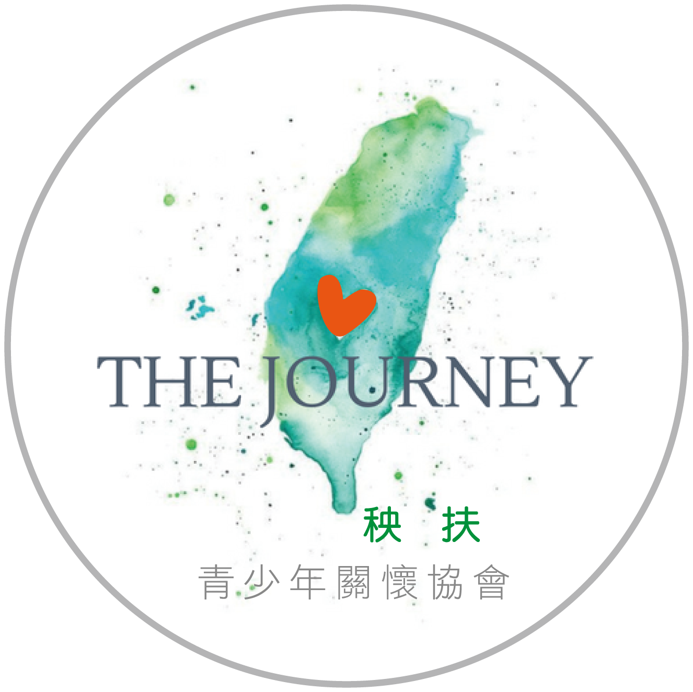
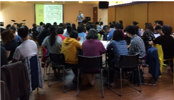
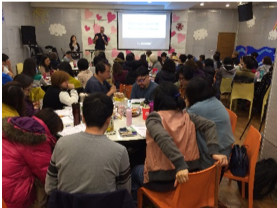
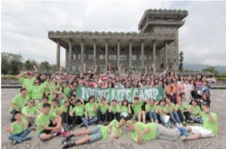
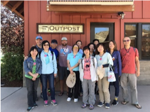
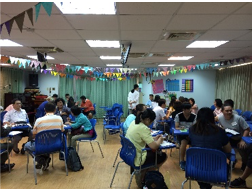
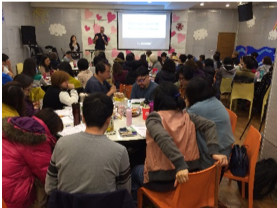
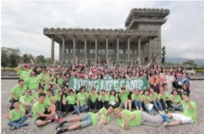
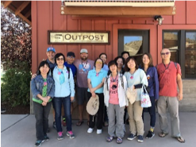
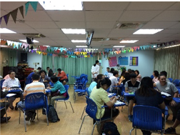

服務內容
一、青少年相關教材出版
二、青少年相關方案研發
三、青少年相關輔導訓練
四、青少年資源平台建置
二、青少年相關方案研發
三、青少年相關輔導訓練
四、青少年資源平台建置
大事記
2017年









舉辦「生生不息青少年外展工作」北中南區基礎訓練A1，內容包括先成為對的人、選擇做對的事、並建立好的關係。出席中的每位青少年工作者再次懷抱熱情，不因受挫而放棄，如標題「生生不息」----需要再次對焦與重燃愛火。
舉辦如何成立「青少年週末俱樂部」訓練C1，幫助青少年工作者有方法與計畫的，為孩子週末時光量身訂作符合他們的俱樂部場所。
舉辦「青少年輔導體驗營」，邀請青少年輔導自己先體驗一場專為國中生舉辦的營會，再親自帶學生赴會參加Young Life Camp。
「種子團隊至美國Young Life奧瑞州 Creekside營地觀摩」，能參觀Young Life 機構75年來致力打造專屬國中生的營會，真不虛此行。
舉辦「青少年外展系列訓練」E1課程，談到全球青少年外展工作現況、青少年外展甘苦談、現場實務運用與操作教學。
舉辦如何成立「青少年週末俱樂部」訓練C1，幫助青少年工作者有方法與計畫的，為孩子週末時光量身訂作符合他們的俱樂部場所。
舉辦「青少年輔導體驗營」，邀請青少年輔導自己先體驗一場專為國中生舉辦的營會，再親自帶學生赴會參加Young Life Camp。
「種子團隊至美國Young Life奧瑞州 Creekside營地觀摩」，能參觀Young Life 機構75年來致力打造專屬國中生的營會，真不虛此行。
舉辦「青少年外展系列訓練」E1課程，談到全球青少年外展工作現況、青少年外展甘苦談、現場實務運用與操作教學。